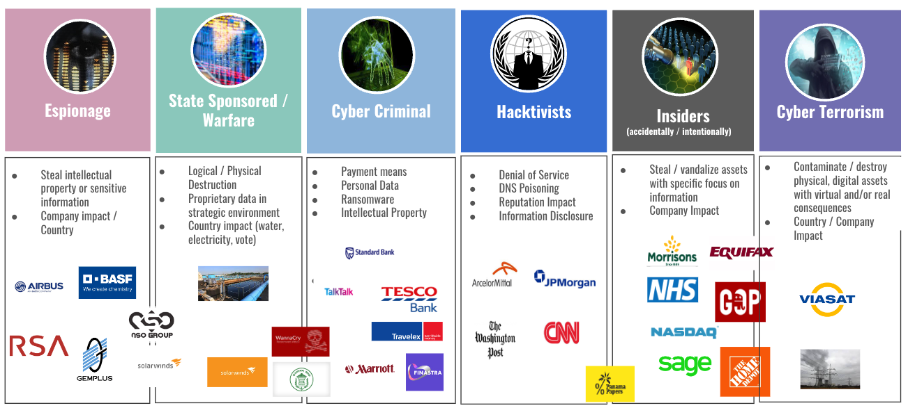
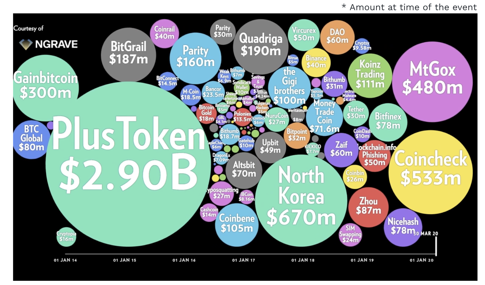
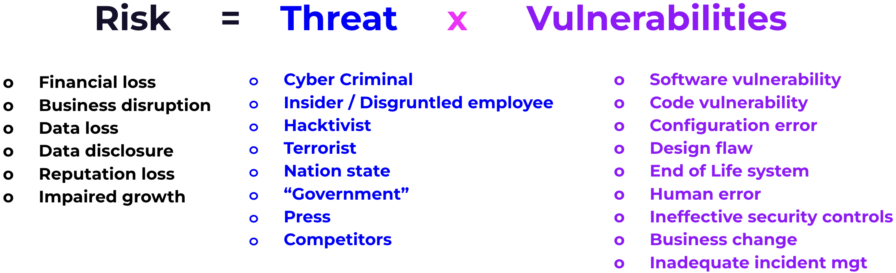
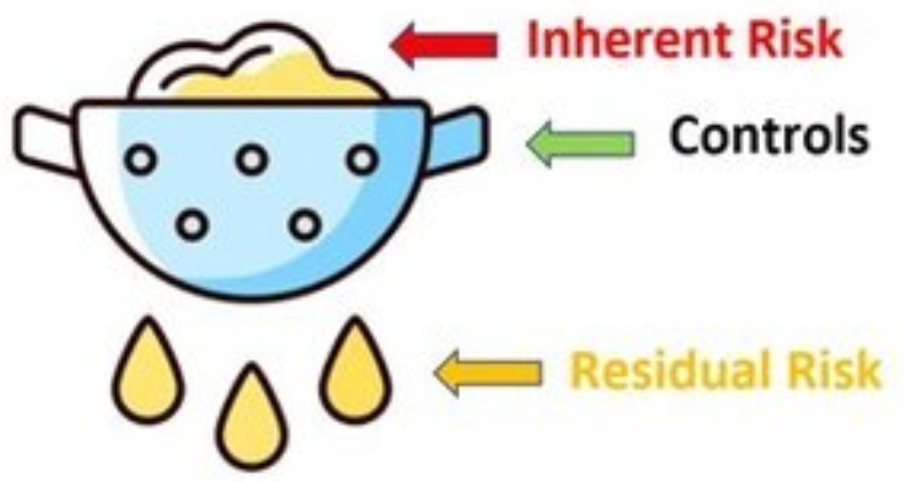
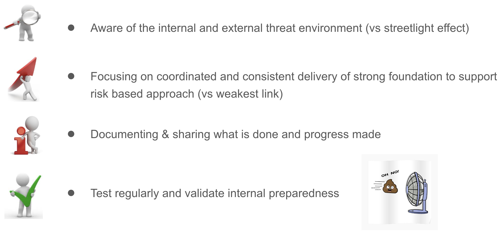

<!DOCTYPE html>
<html lang="en">

<head>
  <meta charset="utf-8" />
  <meta name="viewport" content="width=device-width, initial-scale=1.0, maximum-scale=1.0, user-scalable=no" />

  <title>Cybersecurity Overview</title>
  <link rel="shortcut icon" href="./../../../assets/favicon.ico" />
  <link rel="stylesheet" href="./../../../dist/reset.css" />
  <link rel="stylesheet" href="./../../../dist/reveal.css" />
  <link rel="stylesheet" href="./../../../assets/styles/PBA-theme.css" id="theme" />
  <link rel="stylesheet" href="./../../../css/highlight/shades-of-purple.css" />

  <link rel="stylesheet" href="./../../.././assets/styles/custom-classes.css" />

</head>

<body class="site">
  <header class="site-header">
    <!-- This logo is a link only on the watching server, not the production build -->
    <a href="">
      
    </a>
  </header>
  <main class="reveal">
    <article class="slides">
      <section  data-markdown><script type="text/template">

# Cybersecurity Overview
</script></section><section  data-markdown><script type="text/template">
## Outline

<pba-flex center>

1. Threat landscape
1. Risk management
1. Development
1. Conclusion
1. Q&A

</pba-flex>

<aside class="notes"><ul>
<li>Threat landscape<ul>
<li>Key threat actors</li>
<li>Largest crypto heists</li>
<li>Crypto incidents</li>
</ul>
</li>
<li>Risk management<ul>
<li>Inherent &amp; Residual</li>
<li>Key steps of an attack</li>
<li>Importance of culture</li>
</ul>
</li>
<li>Development<ul>
<li>Development and key focus</li>
<li>CI/CD</li>
</ul>
</li>
<li>Conclusion</li>
<li>Q&amp;A</li>
</ul>
</aside></script></section><section  data-markdown><script type="text/template">
#### Cyber Threat - 6 Main Actors



<aside class="notes"><p>Different actors with different drivers but commonalities on modus operandi.</p>
</aside></script></section><section  data-markdown><script type="text/template">
#### Largest Crypto Losses



> Some were Ponzi schemes, most were breaches/exploits

<aside class="notes"><p>On the crypto ecosystem there have been number of cyber events!
<a href="https://medium.com/ngrave/the-history-of-crypto-hacks-top-10-biggest-heists-that-shocked-the-crypto-industry-828a12495e76">https://medium.com/ngrave/the-history-of-crypto-hacks-top-10-biggest-heists-that-shocked-the-crypto-industry-828a12495e76</a></p>
</aside></script></section><section  data-markdown><script type="text/template">
#### More Recent Crypto Incidents


> Strong cyber control foundation decrease exposure to incidents.

<aside class="notes"><ul>
<li><a href="https://www.forbes.com/sites/ninabambysheva/2022/12/28/over-3-billion-stolen-in-crypto-heists-here-are-the-eight-biggest/?sh=5d411c13699f">https://www.forbes.com/sites/ninabambysheva/2022/12/28/over-3-billion-stolen-in-crypto-heists-here-are-the-eight-biggest/?sh=5d411c13699f</a></li>
<li><a href="https://www.zdnet.com/article/iota-cryptocurrency-shuts-down-entire-network-after-wallet-hack/">https://www.zdnet.com/article/iota-cryptocurrency-shuts-down-entire-network-after-wallet-hack/</a></li>
<li><a href="https://news.bitcoin.com/kucoin-boss-on-strategy-after-hack-we-chose-to-act/">https://news.bitcoin.com/kucoin-boss-on-strategy-after-hack-we-chose-to-act/</a></li>
<li><a href="https://halborn.com/explained-the-ronin-hack-march-2022/">https://halborn.com/explained-the-ronin-hack-march-2022/</a></li>
<li><a href="https://www.bitdefender.com/blog/hotforsecurity/cryptocurrency-monero-website-hacked-original-binaries-replaced">https://www.bitdefender.com/blog/hotforsecurity/cryptocurrency-monero-website-hacked-original-binaries-replaced</a> <!-- markdown-link-check-disable-line --></li>
<li><a href="https://www.coindesk.com/markets/2020/02/10/new-crypto-exchange-altsbit-says-it-will-close-following-hack/">https://www.coindesk.com/markets/2020/02/10/new-crypto-exchange-altsbit-says-it-will-close-following-hack/</a></li>
<li><a href="https://peckshield.medium.com/akropolis-incident-root-cause-analysis-c11ee59e05d4">https://peckshield.medium.com/akropolis-incident-root-cause-analysis-c11ee59e05d4</a></li>
<li><a href="https://www.coindesk.com/markets/2020/12/21/bitgrail-operator-may-have-hacked-own-exchange-to-steal-120m-police-allege/">https://www.coindesk.com/markets/2020/12/21/bitgrail-operator-may-have-hacked-own-exchange-to-steal-120m-police-allege/</a></li>
<li><a href="https://coinmarketcap.com/alexandria/article/bitgrail-hack-one-of-the-largest-crypto-hacks-in-history">https://coinmarketcap.com/alexandria/article/bitgrail-hack-one-of-the-largest-crypto-hacks-in-history</a></li>
<li><a href="https://www.coindesk.com/tech/2020/04/08/hacker-exploits-flaw-in-decentralized-bitcoin-exchange-bisq-to-steal-250k/">https://www.coindesk.com/tech/2020/04/08/hacker-exploits-flaw-in-decentralized-bitcoin-exchange-bisq-to-steal-250k/</a></li>
<li><a href="https://www.coindesk.com/policy/2021/02/20/cryptopia-exchange-currently-in-liquidation-gets-hacked-again-report/">https://www.coindesk.com/policy/2021/02/20/cryptopia-exchange-currently-in-liquidation-gets-hacked-again-report/</a></li>
<li><a href="https://bravenewcoin.com/insights/cryptopia-exchange-liquidator-releases-third-report">https://bravenewcoin.com/insights/cryptopia-exchange-liquidator-releases-third-report</a></li>
<li><a href="https://elementus.io/blog/cryptopia-hack-transparency/">https://elementus.io/blog/cryptopia-hack-transparency/</a></li>
<li><a href="https://blog.merklescience.com/hacktrack/hack-track-eterbase-cryptocurrency-exchange">https://blog.merklescience.com/hacktrack/hack-track-eterbase-cryptocurrency-exchange</a></li>
<li><a href="https://www.reuters.com/investigates/special-report/fintech-crypto-binance-dirtymoney/">https://www.reuters.com/investigates/special-report/fintech-crypto-binance-dirtymoney/</a></li>
</ul>
</aside></script></section><section  data-markdown><script type="text/template">
#### InfoSec & Cyber Risk - Taxonomy



<aside class="notes"><p>When a threat is leveraging a vulnerability, the consequence is a risk.
Usually Threats cannot be influenced, when vulnerabilities can be.
Both Threats and Vulnerabilities are evolving over time based on multiple factors, so the importance of deploying controls to identify, prevent, detect and respond &amp; recover against them (NIST)</p>
</aside></script></section><section  data-markdown><script type="text/template">
#### Taxonomy - Threats Examples

- Cyber Criminal : In the last 12 months, cyber criminal activity +200%
- Insider / Disgruntled employee : lot of evolution on resources
- Hacktivist : Crypto projects and Web3 have some detractors
- Terrorist : they are increasingly using cyber as a weapon
- Nation state : Geopolitical evolution with China, North Korean, Russia/Ukraine
- "Government" : There is lot of regulatory scrutiny on crypto area
- Media : Web3 & Cryptocurrency evolutions are regularly in the Media
- Competitors : Polkadot approach is a game changer
</script></section><section  data-markdown><script type="text/template">
#### What Is Cyber Risk Management?


</script></section><section  data-markdown><script type="text/template">
#### What Is Cyber Risk Management?


</script></section><section  data-markdown><script type="text/template">
#### Inherent And Residual Risk



> Having visibility of inherent risk facilitates a common view on area of focus and priorities.

<aside class="notes"><ul>
<li><p>It is foundational to identify inherent risk. Including in partnership with asset owner. Especially from an impact perspective</p>
</li>
<li><p>Controls are key to :</p>
<ul>
<li>Reduce likelihood of initial compromise</li>
<li>Limit the impact of compromise once a foothold has been established</li>
</ul>
</li>
</ul>
<p>And to enhance ability to detect compromise asap</p>
<p>Starting from the inherent risk is foundational as the threat landscape will evolve including the effectiveness of the control</p>
</aside></script></section><section  data-markdown><script type="text/template">
#### Attack Kill Chain


<aside class="notes"><p>Usually an attacker is not attacking directly the target but :</p>
<ol>
<li>Collect information leveraging the digital footprint available (linkedin profile, dns records, website, repositories, 3rd parties, anything publicly available)</li>
<li>Use information available and vulnerabilities to create a “weapon” to prepare an attack</li>
<li>Deliver the “weapon” via available channels : email (prof./person.), usb, WhatsApp/Signal/Telegram, webpage (legit or squatting), code update, etc</li>
<li>Use the “weapon” delivered on the victim’s system to execute code</li>
<li>Get a foothold on the target</li>
<li>Move laterally smoothly to reach the target objective including staying hidden for a period of time</li>
<li>Execute final objective : ransom, denial or service, data exfiltration, corruption, fund stealing</li>
</ol>
</aside></script></section><section  data-markdown><script type="text/template">
#### Importance Of Culture


</script></section><section  data-markdown><script type="text/template">
#### InfoSec & Cyber Risk - Embedded

Security embedded and partnering at each steps with key success factors:

<pba-cols>
<pba-col>

- Upfront threat modeling
- Peers code review
- Code scanning
- Independent security code review

</pba-col>
<pba-col>

- Penetration testing (pentest)
- Secret management
- Supply chain management
- Monitoring
- Playbooks

</pba-col>
</pba-cols>
</script></section><section  data-markdown><script type="text/template">
#### InfoSec & Cyber Risk - CI/CD


<aside class="notes"><p>This is a continuous process, at each step.</p>
</aside></script></section><section  data-markdown><script type="text/template">
#### Conclusion


</script></section><section  data-markdown><script type="text/template">
<!-- .slide: data-background-color="#4A2439" -->

# Questions
</script></section><section  data-markdown><script type="text/template">
#### Next Practical Sessions

- Security Awareness (40/50mn) :
  Context and adversaries, Attack Surface and Social Engineering
- User Centric Security in Web3 (40/50mn) :
  Wallet landscape, Key management and User device protection
- Infrastructure Security (40/50mn) :
  Concentration, deplatforming, supply chain risks, Key management on the nodes and Passwords management for Infrastructure
- Application Security (60mn) :
  Securing SDLC, Components of AppSec and Known Attack Surfaces & Vectors
</script></section><section  data-markdown><script type="text/template">
#### Appendix - Streetlight Effect


</script></section>
    </article>
  </main>

  <script src="./../../../dist/reveal.js"></script>

  <script src="./../../../plugin/markdown/markdown.js"></script>
  <script src="./../../../plugin/highlight/highlight.js"></script>
  <script src="./../../../plugin/zoom/zoom.js"></script>
  <script src="./../../../plugin/notes/notes.js"></script>
  <script src="./../../../plugin/math/math.js"></script>

  <script src="./../../../assets/plugin/mermaid.js"></script>
  <script src="./../../../assets/plugin/mermaid-theme.js"></script>

  <script src="./../../../assets/plugin/chart/chart.js"></script>
  <script src="./../../../assets/plugin/chart/chart.min.js"></script>

  <script src="./../../../assets/plugin/tailwindcss.min.js"></script>

  <script>
    function extend() {
      var target = {};
      for (var i = 0; i < arguments.length; i++) {
        var source = arguments[i];
        for (var key in source) {
          if (source.hasOwnProperty(key)) {
            target[key] = source[key];
          }
        }
      }
      return target;
    }

    // default options to init reveal.js
    var defaultOptions = {
      controls: true,
      progress: true,
      history: true,
      center: true,
      transition: 'default', // none/fade/slide/convex/concave/zoom
      slideNumber: true,
      mermaid: {
        startOnLoad: false,
        logLevel: 3,
        theme: 'base',
        themeVariables: {
          primaryColor: purple,
          primaryTextColor: white,
          primaryBorderColor: pink,
          lineColor: pink,
          secondaryColor: lightPurple,
          tertiaryColor: lightPurple,
        },
      },
      chart: {
        defaults: {
          color: 'lightgray', // color of labels
          scale: {
            beginAtZero: true,
            ticks: { stepSize: 1 },
            grid: { color: "lightgray" }, // color of grid lines
          },
        },
        line: { borderColor: ["#ccc", "#E6007A", "#6D3AEE"], "borderDash": [[5, 10], [0, 0]] },
        bar: { backgroundColor: ["#ccc", "#E6007A", "#6D3AEE"] },
      },
      plugins: [
        RevealMarkdown,
        RevealHighlight,
        RevealZoom,
        RevealNotes,
        RevealMath,
        RevealMermaid,
        RevealChart
      ]
    };

    // options from URL query string
    var queryOptions = Reveal().getQueryHash() || {};

    var options = extend(defaultOptions, {"width":1400,"height":900,"margin":0,"minScale":0.2,"maxScale":2,"transition":"none","controls":true,"progress":true,"center":true,"slideNumber":true,"backgroundTransition":"fade"}, queryOptions);
  </script>


  <script>
    Reveal.initialize(options);
  </script>
</body>

</html>